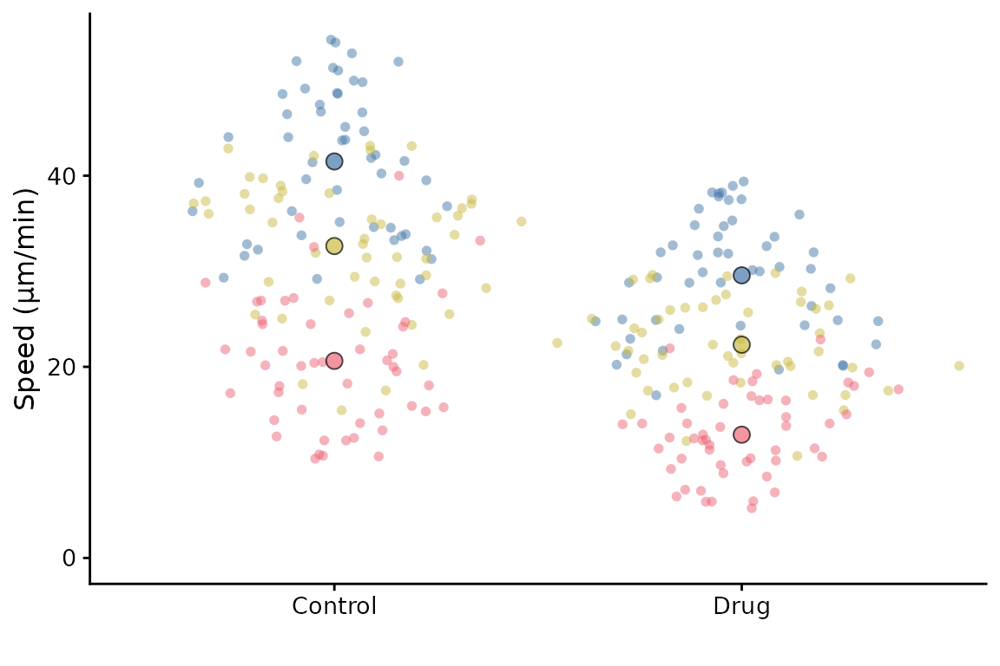
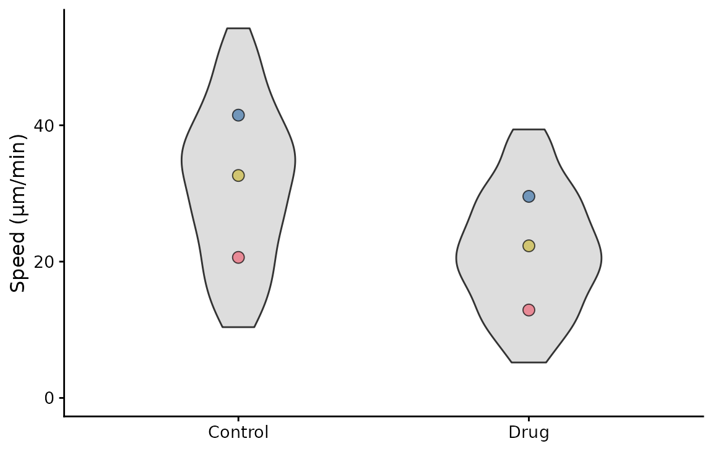
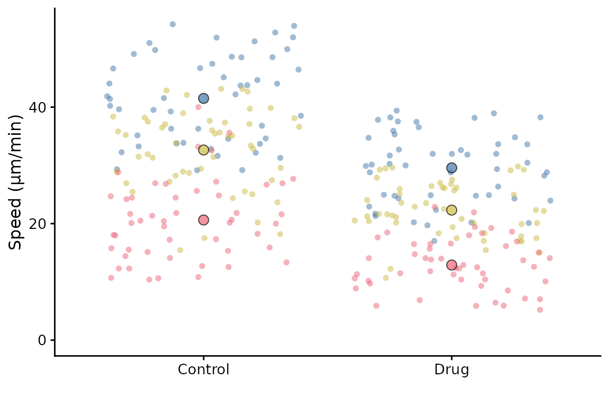
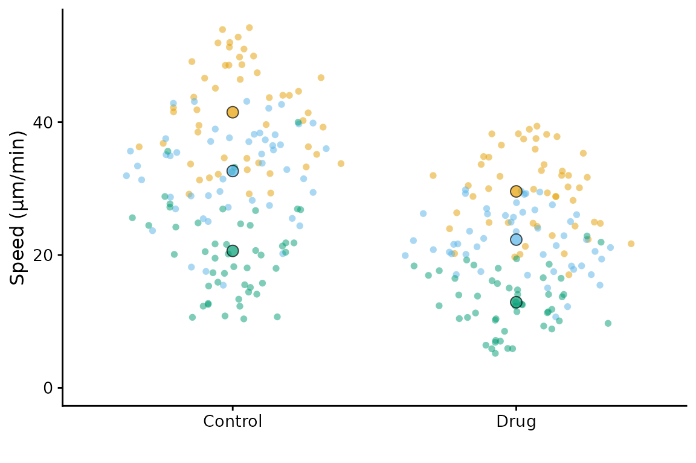
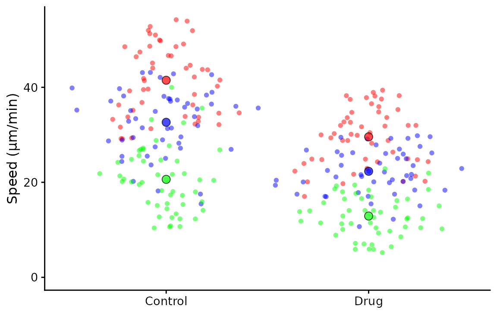
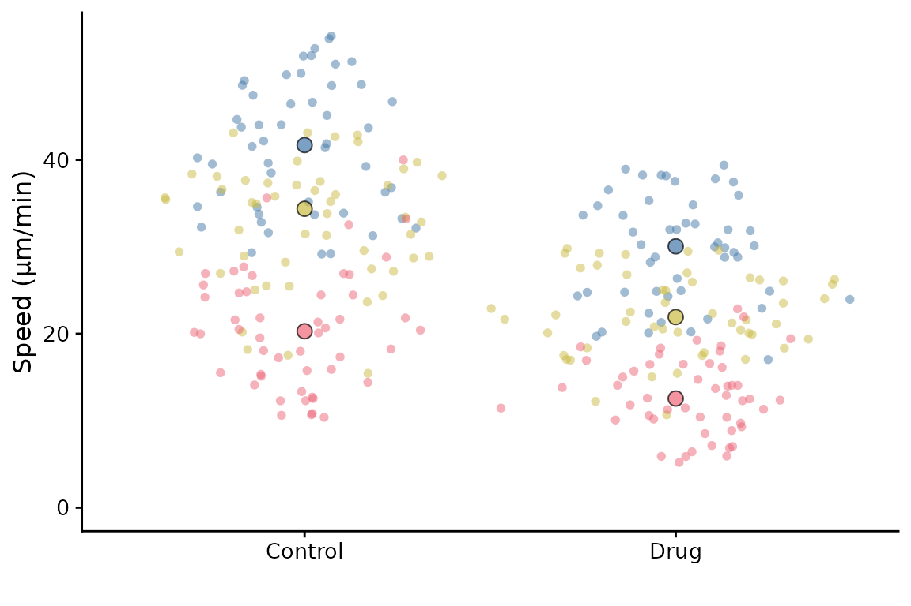
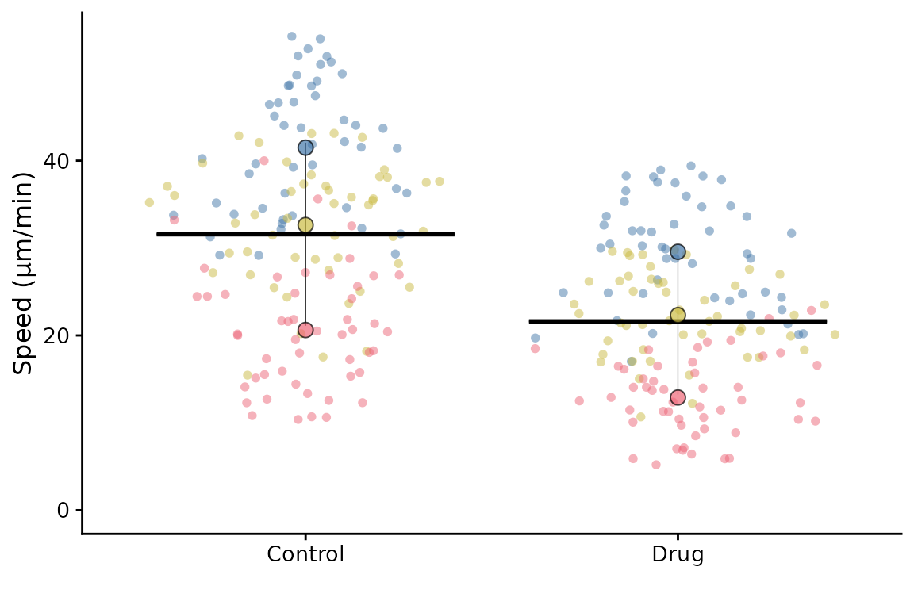
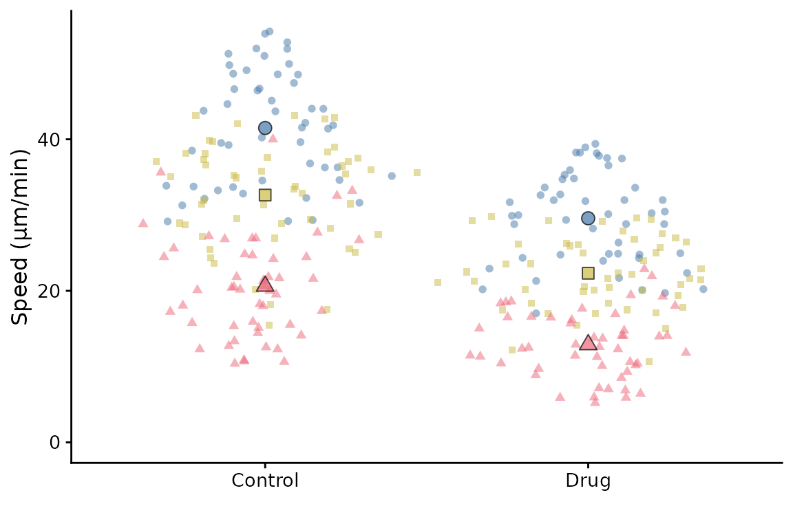
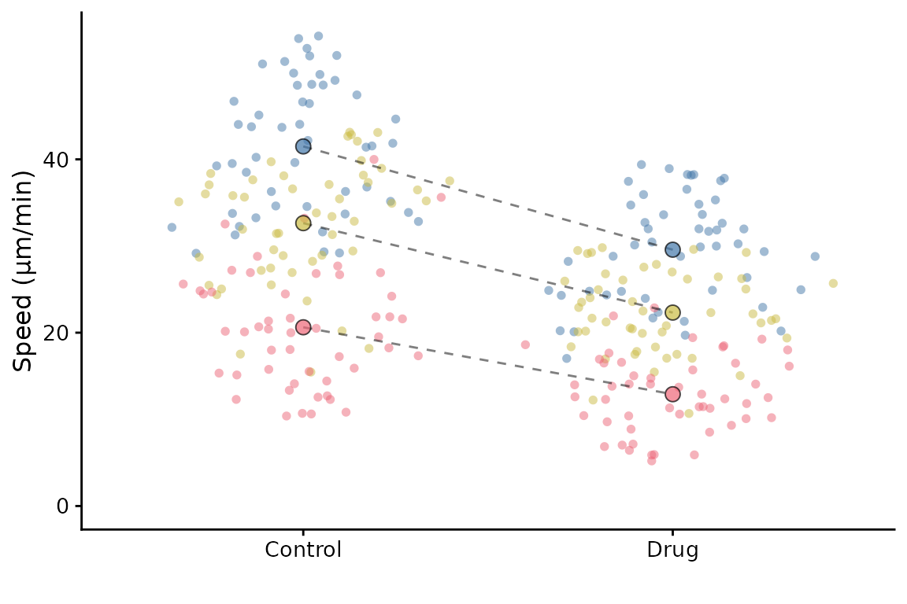
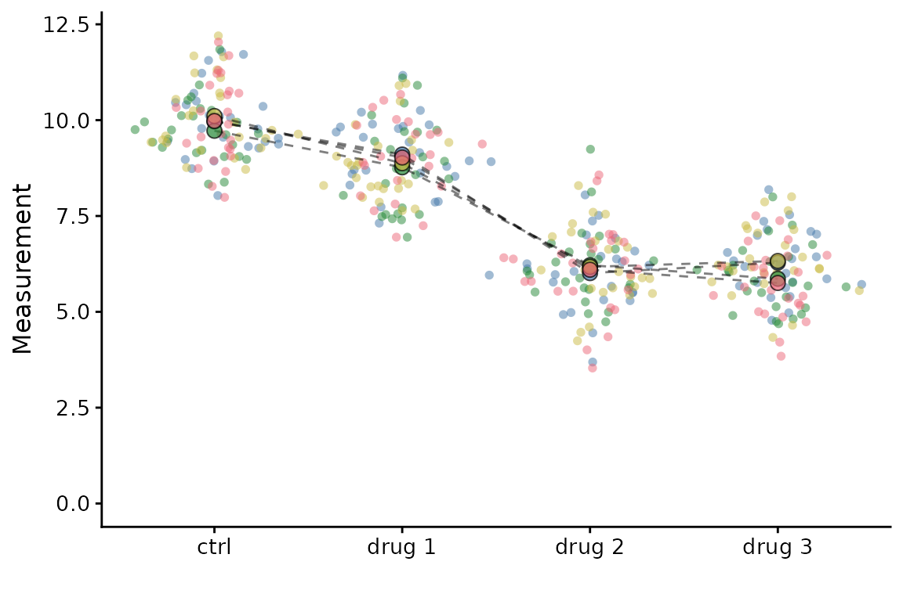

A basic SuperPlot
Example data from the original paper is included in the package.
We’ll use this for demonstration. The data is called
lord_jcb. A basic SuperPlot can be generated with the
following code:
library(SuperPlotR)
#> Error in get(paste0(generic, ".", class), envir = get_method_env()) :
#> object 'type_sum.accel' not found
superplot(lord_jcb, "Speed", "Treatment", "Replicate", ylab = "Speed (µm/min)")This will generate a SuperPlot of the Speed data, with
Treatment on the x-axis and Replicate is used
to group the data. The y-axis label is set to “Speed”.
An equivalent call in long form is:
superplot(
df = lord_jcb,
meas = "Speed",
cond = "Treatment",
repl = "Replicate",
ylab = "Speed (µm/min)"
)
Customising the SuperPlot
A separate vignette describes how to customise the sizing of the plot. Here, we will look at major customisation options.
Data distribution
The underlying data can be rendered as violins,
superplot(lord_jcb, "Speed", "Treatment", "Replicate",
ylab = "Speed (µm/min)", datadist = "violin")
or with a jittered scatter plot, the default (shown in the first
example on this page) uses sina which is a jittered scatter
plot with a density estimate.
superplot(lord_jcb, "Speed", "Treatment", "Replicate",
ylab = "Speed (µm/min)", datadist = "jitter")
Colours
The colours of the points can be changed. The default is Paul Tol’s
bright palette ("tol_bright") but you can select from:
"tol_bright""tol_vibrant""tol_muted""tol_light"- or Color Universal Design (
"cud")
superplot(lord_jcb, "Speed", "Treatment", "Replicate",
ylab = "Speed (µm/min)", pal = "cud")
It’s possible to supply your own palette as a vector of colours (in hex or description format)
superplot(lord_jcb, "Speed", "Treatment", "Replicate",
ylab = "Speed (µm/min)", pal = c("#ff0000", "blue", "green"))
Summary points
The mean of each replicate is shown by default. You can show the median instead
superplot(lord_jcb, "Speed", "Treatment", "Replicate",
ylab = "Speed (µm/min)", rep_summary = "rep_median")
Bars
The default SuperPlot does not include bars to indicate the mean ±
error. They can be added by using the bars argument.
Options are:
-
"mean_sd"= mean ± standard deviation -
"mean_sem"= mean ± standard error of the mean -
"mean_ci"= mean ± 95% confidence interval
Note that these bars show the mean ± error of the replicate means not the underlying data points.
superplot(lord_jcb, "Speed", "Treatment", "Replicate",
ylab = "Speed (µm/min)", bars = "mean_sd")
Data point shapes
By default, all data points are circles. If you want to use different
shapes for different conditions, you can use the shapes
argument. Set to TRUE to use different shapes for each
replicate.
superplot(lord_jcb, "Speed", "Treatment", "Replicate",
ylab = "Speed (µm/min)", shapes = TRUE)
If you’d like to link the summary points, set
linking = TRUE.
superplot(lord_jcb, "Speed", "Treatment", "Replicate",
ylab = "Speed (µm/min)", linking = TRUE)
Linkages can be made when there are more than two groups. To demonstrate this we will use some toy data:
set.seed(123)
example <- data.frame(meas = rep(rep(c(10, 9, 6, 6), each = 25), 4) + rnorm(400),
cond = rep(rep(c("ctrl", "drug 1", "drug 2", "drug 3"), each = 25), 4),
expt = rep(c("exp1","exp2","exp3","exp4"), each = 100))
superplot(example, "meas", "cond", "expt",
linking = TRUE)
Saving the SuperPlot
The SuperPlot can be saved as a PDF or PNG file using the
ggsave function from the ggplot2 package.
More customisation
A separate vignette describes how to customise the SuperPlot further.
See vignette("advanced").
Session Info
sessionInfo()
#> R version 4.4.2 (2024-10-31)
#> Platform: x86_64-pc-linux-gnu
#> Running under: Ubuntu 24.04.1 LTS
#>
#> Matrix products: default
#> BLAS: /usr/lib/x86_64-linux-gnu/openblas-pthread/libblas.so.3
#> LAPACK: /usr/lib/x86_64-linux-gnu/openblas-pthread/libopenblasp-r0.3.26.so; LAPACK version 3.12.0
#>
#> locale:
#> [1] LC_CTYPE=C.UTF-8 LC_NUMERIC=C LC_TIME=C.UTF-8
#> [4] LC_COLLATE=C.UTF-8 LC_MONETARY=C.UTF-8 LC_MESSAGES=C.UTF-8
#> [7] LC_PAPER=C.UTF-8 LC_NAME=C LC_ADDRESS=C
#> [10] LC_TELEPHONE=C LC_MEASUREMENT=C.UTF-8 LC_IDENTIFICATION=C
#>
#> time zone: UTC
#> tzcode source: system (glibc)
#>
#> attached base packages:
#> [1] stats graphics grDevices utils datasets methods base
#>
#> other attached packages:
#> [1] ggplot2_3.5.1 SuperPlotR_0.0.3
#>
#> loaded via a namespace (and not attached):
#> [1] gtable_0.3.6 jsonlite_1.8.9 dplyr_1.1.4 compiler_4.4.2
#> [5] tidyselect_1.2.1 Rcpp_1.0.13-1 jquerylib_0.1.4 systemfonts_1.1.0
#> [9] scales_1.3.0 textshaping_0.4.1 yaml_2.3.10 fastmap_1.2.0
#> [13] R6_2.5.1 labeling_0.4.3 generics_0.1.3 knitr_1.49
#> [17] MASS_7.3-61 polyclip_1.10-7 tibble_3.2.1 desc_1.4.3
#> [21] munsell_0.5.1 bslib_0.8.0 pillar_1.10.0 rlang_1.1.4
#> [25] cachem_1.1.0 xfun_0.49 fs_1.6.5 sass_0.4.9
#> [29] cli_3.6.3 withr_3.0.2 tweenr_2.0.3 pkgdown_2.1.1
#> [33] magrittr_2.0.3 digest_0.6.37 grid_4.4.2 ggforce_0.4.2
#> [37] cowplot_1.1.3 lifecycle_1.0.4 vctrs_0.6.5 evaluate_1.0.1
#> [41] glue_1.8.0 farver_2.1.2 ragg_1.3.3 colorspace_2.1-1
#> [45] rmarkdown_2.29 tools_4.4.2 pkgconfig_2.0.3 htmltools_0.5.8.1